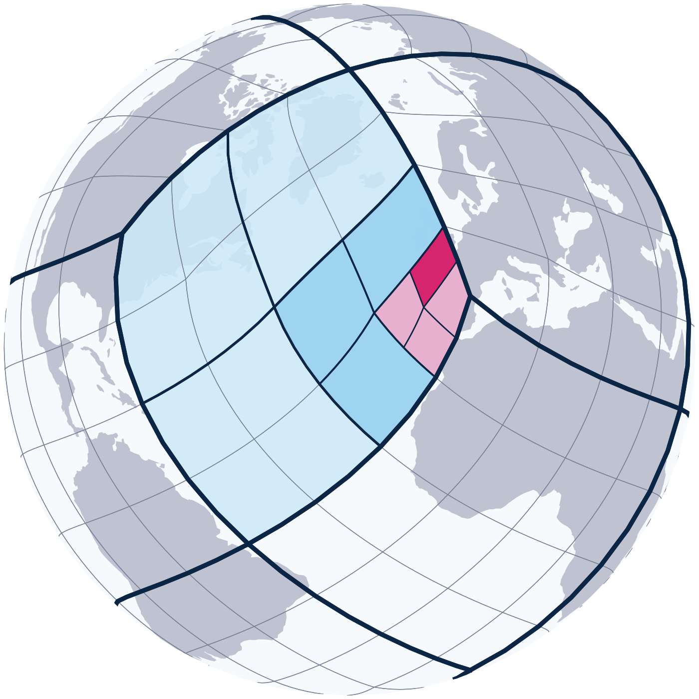

楕円体 HEALPix：位置・面積・解像度を区別する#
この章で理解すること#
pangeo-fish の位置推定では、魚の候補位置を有限個のセルに分け、各時刻に各セルがどの程度もっともらしいかを計算します。HEALPix は、この候補位置を表す空間格子です。タグの水温や潮汐から位置を推定する方法は観測モデルの章で扱い、この章では「位置を、地球のどんな形の上の、どのセルとして表すか」を整理します。ワークショップの格子はすべて WGS84 です。pangeo-fish での扱いは第7節にまとめています。
この区別は沿岸で特に大切です。受信局、海底地形、水温場、推定経路が同じ緯度・経度を表しているつもりでも、格子の作り方や緯度の解釈が食い違うと、同じセル番号を照合しても同じ場所を指しません。
この章の内容は、HEALPix の原論文、緯度の変換に関する Karney の解説、GRID4EARTH による楕円体への適用に基づきます。[GorskiHB+05, Kar24, ODM+26]
1. HEALPix がそろえるもの#
HEALPix は Hierarchical Equal Area isoLatitude Pixelization の略です。標準的な格子は12個の基本セルから始まり、階層的に細分化できます。同じ解像度のセルは面積が等しく、セルの中心は同じ緯度の環に並びます。セルは曲線で囲まれた四辺形で、場所によって形が異なります。すべての辺の長さが同じという意味ではありません。[GorskiHB+05] 下の図は、WGS84 楕円体上の HEALPix 格子の例です。

図：WGS84 楕円体上の HEALPix セルと、入れ子の細分化の例です。 太い線で囲まれた12個の基本セルのうち一つが、4分割を繰り返して細かいセルに分けられています。魚の推定結果ではなく、格子の形を示す説明図です。
格子を細かくすることと、観測の情報を増やすことは別です。例えば海洋モデルが十分に表現できない沿岸の水温の構造は、推定格子を細かくしても復元されません。細かい格子では、同じ情報をより多くのセルに配分するだけになる場合もあります。解像度は、海岸の形の表現、計算にかかる費用、結果が格子の細かさに左右される程度を合わせて決めます。
確率質量と確率密度#
セル \(c\) の領域を \(A_c\)、連続した空間での位置の密度を \(p(x)\) とすると、魚がそのセルにいる確率は
です。これは面積を持つ領域に対する確率質量（セル全体としての確率）です。小さいセルの中で密度がほぼ一定なら \(P_c\simeq p(x_c)|A_c|\) となります。同じレベルの等積セルでは、全セルに同じ確率質量を置くことが、全域で一様な密度に対応します。
ただし、沿岸のセルの一部だけが海である場合、「セル全体の面積」と「魚がいられる海の面積」は違います。海の割合 \(f_c\) を使って海の上で一様な事前の密度を表したければ、\(P_c\propto f_c|A_c|\) が対応します。一方、閾値でセルを採用・除外する方法は、海の割合を 0 か 1 の採否に置き換える、別のモデル化です。等積格子だからといって、海岸の扱いが自動的に適切になるとは限りません。
2. 地球の形と三つの緯度#
地球は完全な球ではなく、極方向に少しつぶれた楕円体です。WGS84 はその形を定めた標準的な楕円体で、GPS などで使われる緯度・経度は WGS84 の緯度・経度です。
この楕円体の上で面積のそろったセルを作るために、HEALPix の内部では、通常の緯度とは別の補助的な緯度（等積緯度）を使います。これは内部の計算であり、利用者が意識する必要はありません。ただし、緯度には次の三つがあることを知っておくと、後の節の注意が分かりやすくなります。
記号 |
名前 |
意味 |
この教材での役割 |
|---|---|---|---|
\(\varphi\) |
測地緯度（geodetic latitude） |
地表の面に垂直な線と赤道面のなす角。地図や GPS の緯度 |
WGS84 の緯度・経度として受け渡す |
\(\theta\) |
地心緯度（geocentric latitude） |
地球の中心と地表の点を結ぶ線と赤道面のなす角 |
参考（面積の計算には使えない） |
\(\xi\) |
等積緯度（authalic latitude） |
緯度帯の面積が保たれるように定めた補助の緯度 |
楕円体上の等積 HEALPix を作る内部計算 |
これらの定義と変換式は healpix-geo の解説と Karney に詳しく書かれています。文献によって記号の使い方が異なるので、記号だけで判断しないようにします。[Kar24, GRID4EARTHa]
地心緯度は測地緯度から簡単な式で求められますが、その式は面積を保つ条件から導いたものではありません。面積をそろえる場面で、等積緯度の代わりに地心緯度を使うことはできません。
WGS84 の長半径 \(a=6\,378\,137\ \mathrm m\)、扁平率 \(1/f=298.257223563\) を使って計算すると、測地緯度45度に対して次の値になります。
緯度の種類 |
値 |
|---|---|
測地緯度 \(\varphi\) |
\(45.00000000^\circ\) |
等積緯度 \(\xi\) |
\(44.87170287^\circ\) |
地心緯度 \(\theta\) |
\(44.80757678^\circ\) |
3. なぜ等積緯度で面積がそろうのか#
楕円体では、緯度が同じだけ違っても、帯の面積は場所によって変わります。等積緯度は、赤道からの帯の面積が \(\sin\xi\) に比例するように定めた緯度です。そのため、等積緯度で等間隔に区切れば、面積の等しい帯になります。経度はこの変換で変わりません。GRID4EARTH はこの考え方を HEALPix に使っています。[ODM+26] 導出は章末の付録に載せています。読み飛ばしても、以降の内容には影響しません。
保たれるのは面積だけです。距離、方位、角度までが保たれるわけではありません。
4. 座標の変換と、位置のずれを区別する#
測地緯度 \(\varphi\) と等積緯度 \(\xi\) を正しく行き来している限り、観測点の位置は動きません。同じ位置を、計算用の別の座標で表しているだけです。
問題になるのは、\(\xi\) の数値を \(\varphi\) として地図へ渡すなど、数値の意味を取り違えたときです。上の45度の例では、二つの数値を同じ経度の測地緯度として読み直すと、南北方向に約14.26 kmのずれになります。これは計算例であり、すべての魚の経路が14 kmずれる、あるいは楕円体を使うと推定誤差が14 km改善する、という結果ではありません。
同じ整数のセル番号でも、格子の作り方（地球の形）が違えば、指す場所が違います。別の格子で作られたセルIDを受け取るときは、この点に注意してください。また、データの位置の対応と、観測誤差による魚の位置の不確実性は、別の問題として評価します。
5. level、nside、セル数、代表長#
この教材の階層レベルを \(L\) とすると、
セルの面積は WGS84 楕円体の全表面積を \(12\times4^L\) 等分したもので、代表長はその正方形に換算した辺の長さ \(\ell=\sqrt{A_{\mathrm{cell}}}\) とします。セル数の式は HEALPix の構成から、以下の数値は WGS84 の定数から求めました。[GorskiHB+05]
level \(L\) |
nside |
全球セル数 |
セル面積（km²） |
代表長 \(\sqrt{A_{\mathrm{cell}}}\)（km） |
|---|---|---|---|---|
9 |
512 |
3,145,728 |
162.1455 |
12.7336 |
10 |
1,024 |
12,582,912 |
40.5364 |
6.3668 |
11 |
2,048 |
50,331,648 |
10.1341 |
3.1834 |
12 |
4,096 |
201,326,592 |
2.5335 |
1.5917 |
13 |
8,192 |
805,306,368 |
0.6334 |
0.7959 |
level を1増やすと、面積は4分の1、代表長は2分の1になります。配布デモのコメントにある「約6.4 km」「約1.6 km」は、この代表長を丸めた値です。これは同じ面積の正方形の辺の長さに当たる目安で、実際のセルの辺の長さ、受信の範囲、魚の測位誤差、海洋モデルの実効的な解像度を表す値ではありません。
例えば level 10 で放流位置の標準偏差を約0.64 km相当に設定しても、候補位置は約6.4 kmを代表長とする離散的なセルです。狭い誤差の分布を格子がどう表しているか、結果がセルの割り当て方に左右されないかを確認してください。
6. NESTED ID はセルの識別子#
HEALPix のセル番号の付け方には RING と NESTED などがあります。同じ格子でも番号の付け方が違えば、整数の意味は違います。NESTED では、level \(L\) のセル番号 \(p\) の4個の子は、level \(L+1\) で \(4p,4p+1,4p+2,4p+3\) になります。親の番号は整数の割り算 \(p_{\mathrm{child}}//4\) で得られます。[HEALPixCollaboration24]
この性質は、細かいセルを親のセルにまとめるときに便利です。ただし、海のセルだけを取り出したデータでは、配列の0番目が全球のセル0を意味するとは限りません。また、番号が近いセルが地図上で隣り合っているとは限りません。セルIDを並べただけで、海岸を越えない経路が得られるわけでもありません。
データを照合するときは、少なくとも次をひと組として扱います。
HEALPix の格子の定義
level、または nside
NESTED／RING などの番号の付け方
地球の形
cellsに保存された実際のセルID
DGGS（離散的な格子で地球上の位置を表す枠組み）は、セル識別子で空間を指す仕組みの総称であり、特定の整数配列だけを指す名前ではありません。概念モデルは OGC Topic 21、Web API は別の OGC API – DGGS 文書で扱われており、この二つは別のものです。[OpenGConsortium21, OpenGConsortium25]
7. pangeo-fish は楕円体をどう扱うか#
ワークショップの設定では、格子の作成と、水温・音響・海底地形・潮汐の計算がすべて WGS84 で行われます。設定セルの ellipsoid = "WGS84" を変える必要はありません。結果の保存先も WGS84 用のフォルダです。Complete デモで使う潮汐モデル FES2022b も、WGS84 の格子だけを受け付けます。
pangeo-fish は、格子の定義（格子の名前、level、番号の付け方、ellipsoid）をデータと一緒に保存し、読み戻しても保たれるようにしています。また、データを別の格子に移したり結合したりするとき、これらが食い違っていればエラーにします。
一方、魚の移動の距離は近似で計算しています。二つのセルの中心の間の距離を、楕円体の上の正確な最短距離ではなく、地球の中心から見た角度をもとに求めています。研究で距離の誤差が重要なら、対象の海域と移動の大きさで、近似と正確な距離を別に比べてください。
8. 実習中に確認する最小例#
healpix-geo の nested.lonlat_to_healpix は、経度と緯度（度）を受け取り、depth（level）と ellipsoid を指定してセルIDを返します。pangeo-fish もこの関数を、ellipsoid を明示して呼んでいます。[GRID4EARTHb]
import numpy as np
from healpix_geo.nested import lonlat_to_healpix
# 入力は WGS84 の測地緯度（通常の緯度）。
# 等積緯度へ自分で変換してから渡すと、変換が二重にかかってしまう。
longitude = np.array([139.7, 142.0], dtype="float64")
latitude = np.array([35.0, 40.0], dtype="float64")
cell_ids = lonlat_to_healpix(
longitude, latitude, depth=10, ellipsoid="WGS84"
)
これは書き方を示す例です。実習のノートブックでは設定済みなので、自分で書く必要はありません。
付録：等積緯度の導出（読み飛ばしてよい）#
測地緯度 \(\varphi\)、経度 \(\lambda\) の楕円体上の面積要素は、第一離心率の二乗 \(e^2=f(2-f)\) を使って
と書けます。次の関数を定義します。
微分すると
となり、面積要素は \(\mathrm dA=\tfrac{a^2}{2}\,\mathrm dq\,\mathrm d\lambda\) と書き換えられます。したがって、赤道から緯度 \(\varphi\) までを全経度にわたって積分した帯の面積は \(\pi a^2 q(\varphi)\)、楕円体の全表面積は \(2\pi a^2 q_p\) です。
等積緯度 \(\xi\) は
で定めます。帯の面積は \(q(\varphi)\) に比例するので \(\sin\xi\) にも比例し、\(\xi\) で区切れば面積がそろいます。高精度な変換方法は Karney を参照してください。[Kar24]